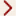

The Adroit Security Manager allows you to configure the necessary groups and their users, as follows:
Tip.About Adroit Security Groups : Security in Adroit works best with an INCLUSIVE security policy, see
 Select whether
you will use a workgroup or domain: this is the most important consideration
when configuring your groups and users. Click for
more details:
Select whether
you will use a workgroup or domain: this is the most important consideration
when configuring your groups and users. Click for
more details:
 key and start typing in Security Manager and select it from the list.
key and start typing in Security Manager and select it from the list. To configure groups and users
on the LOCAL computer:the specified groups and users ONLY apply to the local computer and
this configuration MUST be duplicated on ALL the computers that will run
Adroit in this Workgroup
The branch name changes to Workgroup.
To configure groups and users
on a domain:the specified groups and users apply to ALL the computers on this
Domain.
This connects to the specified domain and changes this branch name to Domain.
Although running outside of a domain is less costly, it is harder to manage groups and user accounts when deploying a distributed Adroit system – especially if there are a large number of users that need to interact with Adroit.
If you are using a Workgroup, then the Adroit Security
Manager
utility can reduce this management overhead by exporting your users and
groups,as follows: Once you have created the necessary groups and/or users
on one computer, you can export these users and groups (Tools menu\Export)
and then import them in the Adroit Security Manager
running on another computer (Tools menu\Import) to automatically
create the users and/or groups that do not exist on this computer. For more details, see Exporting and Importing
Groups and Users.
Once you have created the necessary groups and/or users
on one computer, you can export these users and groups (Tools menu\Export)
and then import them in the Adroit Security Manager
running on another computer (Tools menu\Import) to automatically
create the users and/or groups that do not exist on this computer. For more details, see Exporting and Importing
Groups and Users.
Specify the necessary groups
of users:
add all the groups of users that you require for securing your Adroit
installation. Click for more details:Adroit security works best if you create a hierarchy of user groups,
where the users of higher groups are also members of all the lower groups.
This is known as an INCLUSIVE security policy.
key and start typing in Security Manager and select it from the list. To create the default Adroit
security groups: this can create the recommended Adroit groups, so that
you can create an INCLUSIVE security policy or hierarchy of user groups.
This also creates the typical user ‘DefaultOp’, which is automatically
added to the lowest Adroit security group ‘Users’.
Note: ONLY do this if you have a new Adroit installation and have not created user groups yet.
Note: If you do not specify a prefix then ALL the configured groups of this computer or domain are displayed.
The following groups and user are added automatically to either the local computer (if the branch is Workgroup) or to the domain (if the branch is Domain):
To create a user group:
typically used to add another user group to your existing Adroit security
groups.
Note: If you have specified an Adroit group prefix then this is added to the group name that you specify.
This group is added to either the local computer (if the branch is Workgroup) or to the domain (if the branch is Domain).
To remove a user group:
typically used to remove a user group that is no longer required for your
Adroit security.
This specified group is removed from either the local computer (if the branch is Workgroup) or to the domain (if the branch is Domain).
Note: Any users that are members of this group ONLY have their MEMBERSHIP to this group REMOVED, this does NOT DELETE the USERS themselves.
Specify and/or configure the
necessary users and/or add them to groups: add all the users that you require for securing your Adroit installation
and if necessary assign them to the necessary groups and/or manage their
user account settings. Click for more details:If you are creating the recommended INCLUSIVE security
policy, then you need to add the users of the higher groups to all the
lower groups as well.
key and start typing in Security Manager and select it from the list. The right hand pane provides upper and lower pairs of
lists, as follows:
Note1: ALL the users listed in the Adroit_Users list are automatically added to the Adroit Users group.
Note2: ONLY the users listed in the Adroit_Users list can be added or removed from the Adroit groups that are specified in the lower pair of lists.
Example:if you have a new Adroit installation and
you created the default security groups, then you will have one Adroit_Users
user called DefaultOp, which is a member of the Users
group. When this user is selected the Users
group is displayed in the Current memberships list.
To move existing users to the
Adroit_Users list:
instead of adding new users you can also add existing users to the Adroit_Users
list.
The selected user is added to the Adroit_Users list.
Note: This user is also automatically added to the Adroit Users group of either the local computer (if the branch is Workgroup) or the domain (if the branch is Domain).
To add a new Adroit user:
typically everyone who uses Adroit should have their own user account.
This user is immediately added to the Adroit Users group of either the local computer (if the branch is Workgroup) or the domain (if the branch is Domain).
IMPORTANT: Adding an Adroit user does NOT set its password, so unless you specify a password this user is unable to log on.
To configure the password for
this user: if the Adroit Security Manager utility adds an Adroit user,
then you need to set its password so that it is able to log on to either
the local computer (if the branch is Workgroup) or the domain (if
the branch is Domain).
Tip: You can also double click the required user.
The User details dialog is displayed.
Note: You can also use this dialog to manage the user account settings for this user, see below for more details.
To add an Adroit user to a Adroit
group:
once you have added a user to the Adroit_Users list, you can add
this user to any of the Adroit groups that are listed in the Available
memberships list.
The Available memberships list lists all the Adroit groups of either the local computer (if the branch is Workgroup) or the domain (if the branch is Domain) that this user is NOT yet a member of.
This group is added to the list of Adroit groups that this user is currently a member of, which is listed in the Current memberships list.
To remove an Adroit user from
a Adroit group:
if necessary you can remove user in the Adroit_Users list from
any of the Adroit groups that this user is currently a member of, which
are listed in the Current memberships list.
The Current memberships list lists all the Adroit groups of either the local computer (if the branch is Workgroup) or the domain (if the branch is Domain) that this user IS a member of.

button above this list.This group is added to the list of Adroit groups that this user is NOT currently a member of, which is listed in the Available memberships list.
To manage the user account settings
of a user:
this allows you to configure such settings as setting the password for
this user and/or changing the password settings and/or disabling the user
account itself.
Tip: You can also double click the required user.
The User details dialog is displayed.
User must change password at next logon:
User cannot change password: This setting is recommended for the users of all the user groups except Administrators.
Password never expires: If you are going to use the auto logon feature, this setting is recommended for this user account. In a multi-user environment this setting poses a security risk.
ONLY check the Account disabled setting if you want to temporarily prevent this user from logging onto the local computer (if the branch is Workgroup) or to the domain (if the branch is Domain).
To configure the password for this user: if the Adroit Security Manager utility adds an Adroit user,
then you need to set its password so that it is able to log on to either
the local computer (if the branch is Workgroup) or the domain (if
the branch is Domain).
To remove an Adroit user:
this ONLY removes the currently selected user from the Adroit_Users
list and is UNABLE to remove users from the All users list.
This removes the currently selected user from the Adroit_Users list.
This user is either removed from the local computer (if the branch is Workgroup) or the domain (if the branch is Domain).
To move users from the Adroit_Users
list:
instead of deleting users from the Adroit_Users list, you can simply
move them to the All users list, where they are available for use
if needed.
The selected user is added to the All users list.
Tip: In this case, it may be useful to disable these user accounts until they are needed, see managing user accounts below for more details.
Exporting and Importing Groups and Users: how to use the Adroit Security Manager to export and import configured users and groups.